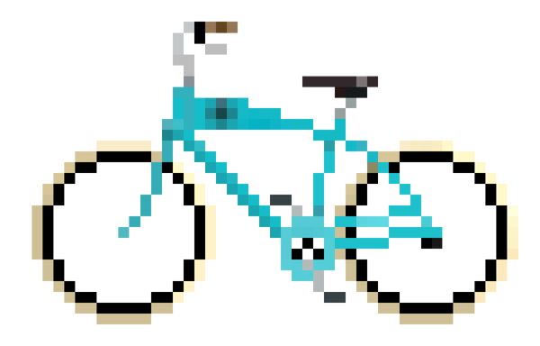
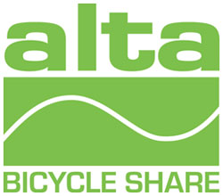
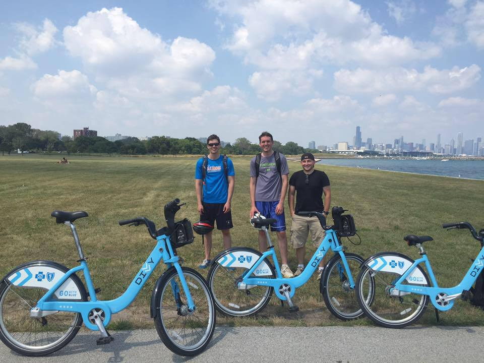
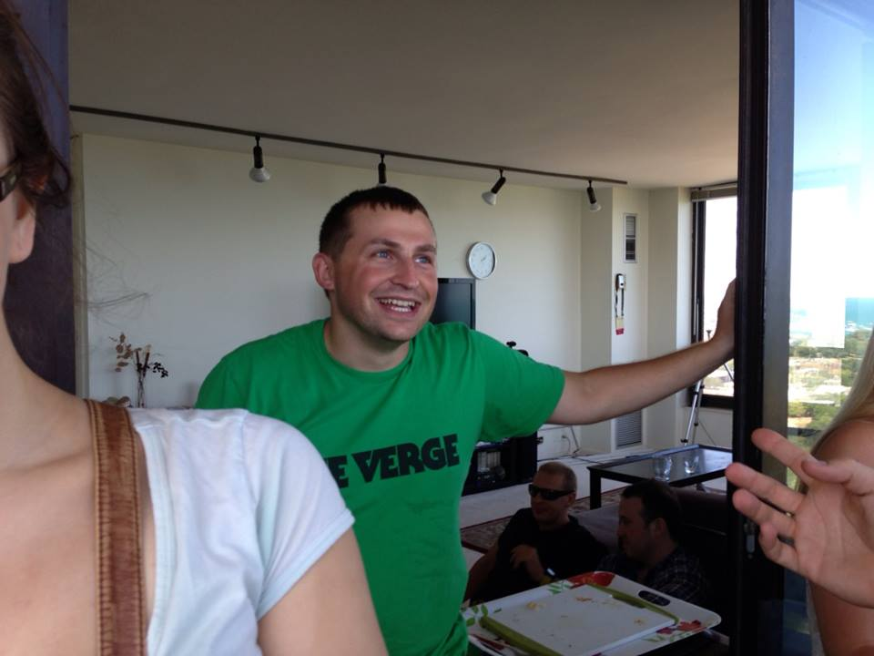

Hello and welcome to divvy fans website!
Hello and Welcome to the world-wide divvy bike fan website. This site is ran by a guy who is a lot like you. I love to bike, explore the city, drink craft beer and enjoy life.
I am currenly studying web development at GA in Chicago, with big dreams in persuing my passion for computer science and living life to the fullest.
Please take a look at the map to the left to find the closest divvy bike. Click anywhere on the map to display the five nearest stations to that spot, along with information for bike availability.

2007 - Frech Charm
In 2007, Chicago Mayor Richard M. Daley visited Paris, France, where he personally tested out their Vélib' bicycle sharing system and was "greatly impressed".He determined that a similar system would work well in Chicago. After returning from his European trip, Mayor Daley requested proposals from private partners to create a bike share system for Chicago. Two potential operators came forward, but submitted plans that would have been too expensive for the city to fund.
2012 - Alta Bikeshare
In May 2012, the City of Chicago awarded Alta Bicycle Share a contract for "The Purchase, Installation, and Operation of a Bicycle Sharing System".
2014 - I Join
I joined Divvy in 2014, once I started my job downtown. I am wabted to have the ability to drive around the city without having to take the CTA. Divvy proved to be a much faster and less expensive alternative to the CTA.
2015 - SHEFFbrick
2015 was the pivotal year in my life, I became a much more avid Divvy fan with the help of my buddy Josh, who is a huge enthusiast of doing awesome things around the city.
2015 - General Asembly
2015 was the year I decided to make some serious changes in my life. I started GA, learned front end web development, and made this awesome website. I hope to switch industries very soon and be able to do the work that I love.
- 2007
- 2012
- 2014
- 2015
- 2015
Jeremy "SHEFFmachine" Shefer
I have always been a huge fan of biking and care free living. I am fortunate enough to live in a city where public transit can take you just about anywhere. However, it is often slow, and because of that I was always looking for an alternative to trains and busses. Divvy is that alternative. It allows me to navigate the city without a car, in an eco friendly, healthy and fun way. I am a huge fan of divvy, and I presume that if you have found your way onto this page, you are as well.
You suggestions are always appreciated, please leave me a line.
